ひっつき虫と肉球を大切に [梅吉]
昨日今日と一日エアコンなしでも過ごせる様になった大阪です。
気温が下がったせいか梅吉の動きも活発になり、かつ、ひっつき虫復活！！
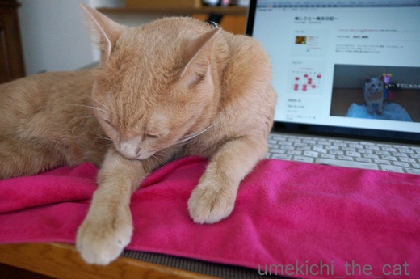
半袖の季節、Macの前部分の熱が気持ち悪いのでタオルをひいています。
トラックパッドも使わないし。
梅吉はなぜかこのタオルに乗りたがるんですよね〜。
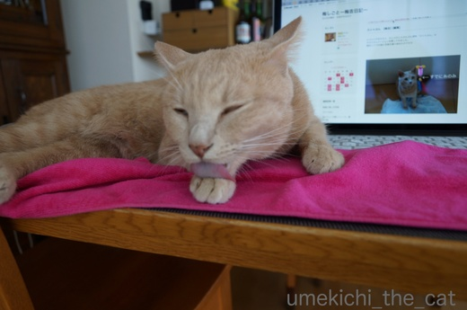
ねーねーねーねー、
タオルめあてと見せかけて本当はおかーさんのそばにいたいんでしょＯ(≧▽≦)Ｏ
お手手、美味しそうだね。
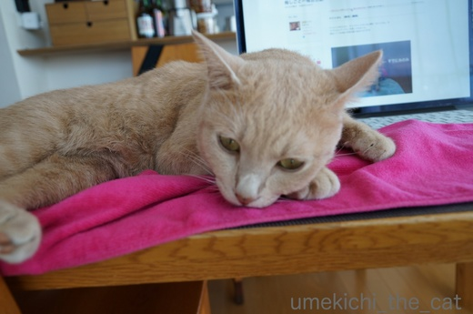
そこに落ち着いちゃうんですか？
ひっつき虫なのは良いんですが何か変なことしてませんか？梅吉さん？？
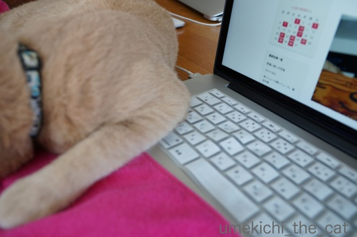
その肘ー！余計なキーを押してますよ！！
さっきから「リーディングリストに追加」と「画面を全選択」しか出来ませんっ![[むかっ（怒り）]](https://blog.ss-blog.jp/_images_e/152.gif)
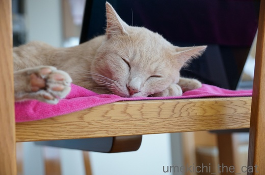
もうPC活は出来ないから梅吉さんの写真を撮りますよ。
ファインダーをのぞいたら違和感が・・・・・
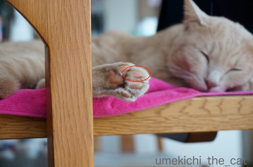
赤丸で囲んだ部分の肉球、かさぶたみたいになっていませんか？
びっくりして実肉球をよくみたらたしかにかさぶた。
でも傷は深くなくて擦り傷ぐらいな感じでした。
一体どこで・・・？
思い当たること、あります、あります。
あんまり張り切りすぎない様にしてくださいね、梅吉さん。
 ↑ガブッと一押し↑
↑ガブッと一押し↑
先日買ったカシャぶん。
好きすぎて勢いが止まりません。
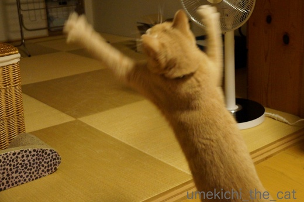
![[猫]](https://blog.ss-blog.jp/_images_e/101.gif) じゃんぷや〜！
じゃんぷや〜！
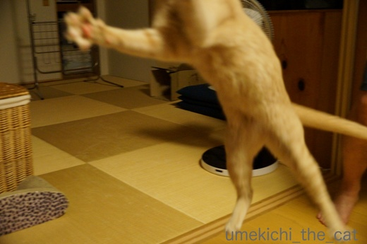
にゃぱー！！
ボケボケだし思い切りフレームアウトしていますが
梅吉大興奮の臨場感は感じていただけるのではないででしょうか。
肉球のかさぶたはこんな風に激しく走り回りすぎて出来ちゃった傷と思われます。
肉球は大切にしなくちゃね、梅吉さん。
気温が下がったせいか梅吉の動きも活発になり、かつ、ひっつき虫復活！！
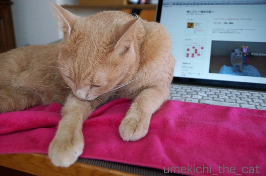
半袖の季節、Macの前部分の熱が気持ち悪いのでタオルをひいています。
トラックパッドも使わないし。
梅吉はなぜかこのタオルに乗りたがるんですよね〜。
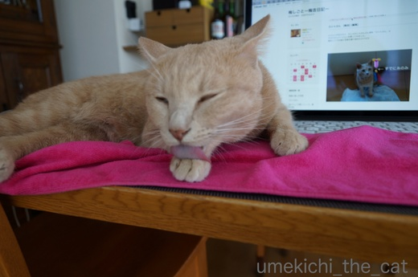
ねーねーねーねー、
タオルめあてと見せかけて本当はおかーさんのそばにいたいんでしょＯ(≧▽≦)Ｏ
お手手、美味しそうだね。
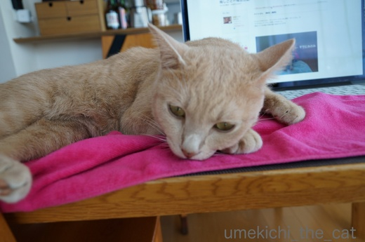
そこに落ち着いちゃうんですか？
ひっつき虫なのは良いんですが何か変なことしてませんか？梅吉さん？？
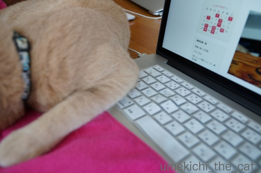
その肘ー！余計なキーを押してますよ！！
さっきから「リーディングリストに追加」と「画面を全選択」しか出来ませんっ
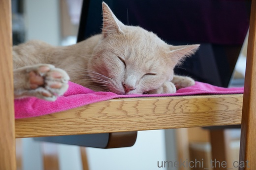
もうPC活は出来ないから梅吉さんの写真を撮りますよ。
ファインダーをのぞいたら違和感が・・・・・
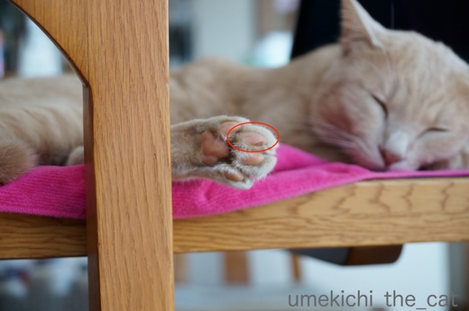
赤丸で囲んだ部分の肉球、かさぶたみたいになっていませんか？
びっくりして実肉球をよくみたらたしかにかさぶた。
でも傷は深くなくて擦り傷ぐらいな感じでした。
一体どこで・・・？
思い当たること、あります、あります。
あんまり張り切りすぎない様にしてくださいね、梅吉さん。
先日買ったカシャぶん。
好きすぎて勢いが止まりません。
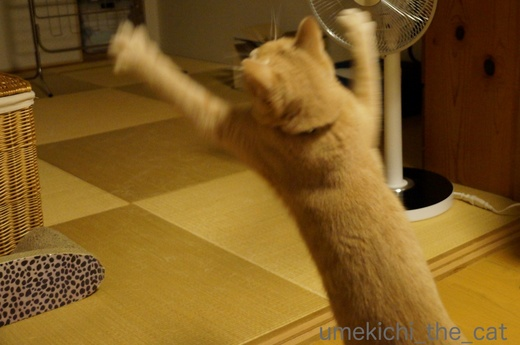
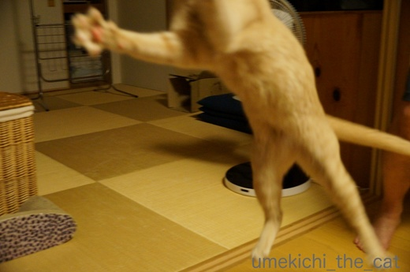
ボケボケだし思い切りフレームアウトしていますが
梅吉大興奮の臨場感は感じていただけるのではないででしょうか。
肉球のかさぶたはこんな風に激しく走り回りすぎて出来ちゃった傷と思われます。
肉球は大切にしなくちゃね、梅吉さん。

カフェオレ色の梅吉

梅吉 2023年8月10日 永眠


梅吉と出会った譲渡会

犬猫の理由なき殺処分ゼロ
妄想広告
UMEKICHI 光

爆発的に早い！
時々攻撃的！
Thanks to Mr.Boss365
爆発的に早い！
時々攻撃的！
Thanks to Mr.Boss365

ひっつき虫、嬉しいですよね♪
お手手、美味しそうですね。
ソフトクリームをなめてるみたいですね。^^;
お部屋を飛び交う梅吉さん、すごいポーズ。^^)
by yes_hama (2017-09-01 22:26)
朝晩がエアコンいらずになりましたね。梅吉さん明らかにPCでイタズラをしようとしていますね。どうして猫ってPCの上がすきなんでしょうね？
by みぃにゃん (2017-09-01 23:31)
梅吉さん、元気ですね(^^♪
飛び跳ねてる写真をなかなか撮る事が出来ません。
どうも、そういう写真を撮るのが苦手です。
挑戦してみます(^^)
by riverwalk (2017-09-01 23:48)
朝晩涼しいだけでずいぶん体が楽ですよね♪
でも梅吉さん、肉球擦り切れるまで張り切っちゃダメですよ～^^;
ウチのもものすごい勢いでオモチャに突進してきて、壁やドアにもゴンゴンぶつかってます。
毛皮脱いだらきっと青あざだらけだろうな～。
もうひっつき虫復活ですか！いいな～いいな～。
ウチは例年11月ごろです。
by ゆきち (2017-09-02 00:00)
ひっつき虫可愛い! もちろんおかーさんのそばに居たいんです。
カシャぶんを追いかけて歩いてる梅吉さんもすごいっ!!
by zombiekong (2017-09-02 03:25)
長男君はこんな感じでいつも傍に居ましたねぇ。
懐かしいなぁ。
by ぽちの輔 (2017-09-02 07:00)
ナイス、にゃぱーショット♡
そのぐらいフレームに入れば、もう、100点満点ですよ♪
涼しくなって、これから、ますます、ひっつき虫の季節にゃ♡
by のらん (2017-09-02 07:42)
うちもカシャブン買いました！！
はしゃいで、動きが激しすぎるので写真が全く撮れません(><)
王子もキーボードでナゾの打ち込みします。
ごはん、とか打ちだしたら怖いけど〜(^^;
by も〜 (2017-09-02 07:48)
ひっつき虫してもらえて良いなぁ( ^ω^ )
うちのニャンズはかみさんにひっつき虫なので、私は自分からひっつき虫してますが
皆冷たいです´д` ;
肉球がかさぶたって、梅吉さんってばカシャぶん好きすぎですよぉ(⌒-⌒; )
by ニッキー (2017-09-02 13:05)
ニャハハ！最高なふり幅！
でも、涼しくなるにつれて、ひっつき度が急上昇♪
猫が冬の季語なのがわかりまする～。
by Ginger (2017-09-02 14:54)
梅吉くん、肌寒くなってきてちぃさん肌が恋しくなっちゃったのかな？
執拗な引っ付き虫！嬉しいけど、勝手なPC操作は～ｗ
かしゃブンで張り切り過ぎて肉球にかさぶたっ！！擦り傷になってるね。
床との摩擦でできたのかな？
家も走り回るタラたちの肉球が心配だけど、
今日、かしゃブン買いに行く予定だよ～～。楽しみ(^-^)
by emi (2017-09-02 15:04)
気持ちよさそうな表情のひっつき虫＾＾
に対してかしゃブンのパワフルな動き！
梅吉く~ん、肉球お大事に。
by ふにゃいの (2017-09-02 19:51)
ひっつき梅吉さん♪ これは嬉しいですね(*^_^*)
ハッスルし過ぎて肉球が！！
プニプニの可愛い肉球を大切にしてね♪
by きぃ (2017-09-02 21:11)
梅吉君、ダイナミーック！
にくきうのカサブタで思い当たるちぃさんもスゴイです。
愛ですね。
by BillK-ko (2017-09-02 21:51)
梅吉さん、すごい跳躍力ですね！
昔、仕事先のデスクにデーンと広がる癖がある
大家さんの猫が住み着いておりました。
猫の世話も仕事の内というその職場、本来の仕事が
進まず１ヶ月で辞めましたが、遊べたのはちょっと
嬉しかったです(^_^)v。ニャンコと遊びたい～
by うっかりくま (2017-09-02 23:12)
ジャンプや〜、にゃぱー、の写真が楽しいです！
うちの猫も、もうちょっと活動的だったら、いいのに、、。
by nachic (2017-09-02 23:45)
スーパージャンプでケガしてしまったのかな。
梅吉さんの肉球、早く治りますように☆
寒くなると、猫がくっついてくるので
嬉しい季節です＾＾
by マーヤ (2017-09-03 00:33)
もうついでにPC作業までやってもらいましょう(笑)
by 響 (2017-09-03 19:56)
yes_hamaさん＞ひっつき虫ならびにお膝猫の頻度も上がって来ました。
涼しくなって来たとはいえ梅吉が膝に乗るとまだ暑い・・・^^;
でも、来ないで〜とは言えない下僕です！！
みぃにゃんさん＞ガードしていないとキーボードの上に座って
かならずどこかのキーを押しています。
shiftキーを押しながらファンクションキーを押したりもするので
全く油断できません^^;
不思議な画面を元に戻せなくて何度ググったことか・・・・(꒦ິ⌑꒦ີ)
riverwalkさん＞梅吉が遊んでいる写真はぼけぼけでも良いや！と
ひたすら連写で撮りまくっています。
5〜600枚くらい撮れる事もザラですがそのうち使える写真が
3〜4枚あるかな・・・という感じですよ〜 (⌒_⌒;
ゆきちさん＞猫は夢中になったら
周りの状況を確認しないで突っ込んで来ますよね^^;
じゃらしを振り回す時もまず下僕が安全なところに誘導・・・・・
しているつもりですが思わぬ動きをするので
あっちにバーンッ！こっちにゴーンッ！！は我が家も同じですww
こてつくんのひっつき虫はもう少し先ですね＾＾
早めのひっつき虫出現は嬉しいですがまだﾁﾄ暑い・・・・・
zombiekongさん＞カシャぶんは激しく振るほど楽しいらしく
追いかける梅吉の動きもかつてないほどダイナミックです！
おかげでカシャぶんは崩壊間近ですよ〜( ；∀；)
ぽちの輔さん＞オールシーズンひっつき虫(≧▽≦)
まだひっつかれるとちょっと暑いですがやっぱり嬉しいです＾＾
のらんさん＞やったー！のらんさんから100点ゲットーー！！
顔は写っていませんが腕と足の開きが可愛すぎで採用しちゃいましたＯ(≧▽≦)Ｏ
これからのますますのひっつき虫とお布団インの季節が楽しみで〜す♪
も〜さん＞王子の激しいカシャぶん姿見たいで〜す( ^ω^ ）
にゃんこの謎の打ち込み、妙に意味の通じる時もありますよねww
ニッキーさん＞ニッキーさん家のニャンズさんったら(⌒_⌒;
ゴッドマザー様から愛情をたっぷりもらいすぎて
満ち足りすぎているんですよね=´ᆺ`=
カシャぶんは本体と棒をつなぐ糸がダメになって丈夫なヒモに付け替えたら
前より興奮しなくなりました・・・・・
あのすぐ壊れそうな作りこそが梅吉心をくすぐっていた様ですΣ(ﾟ◇ﾟ；)
by ちぃ (2017-09-04 14:57)
ひっつき虫の梅吉さん、甘えん坊なんですね＾＾
え、かさぶた？
にゃぱーの写真が豪快！
カシャぶん大人気☆細い紐が良かったんですか＾＾
by sana (2017-09-04 15:05)
Gingerさん＞猫って冬の季語なんですね！知りませんでした〜。
こたつとセットになっていそうですものね＾＾
これからのひっつき虫の季節、楽しみで〜す( ^ω^ ）
emiさん＞そうそう( ･̆ˍ･̆ )PCに寄りかかってよけてくれないのよね〜。
「よけてよ〜」と体を動かそうとすると手にじゃれついて来て
そのままプロレスに・・・(⌒_⌒;
普通のじゃらしでも大興奮のタラくんたちのカシャぶんへの反応
気になって仕方ありません！！
肉球は気をつけてね〜！！
ふにゃいのさん＞カシャぶんを追いかける動きはパワフルすぎて
飼い主もびっくりですよ(･◇･)
もう少しマイルドに遊びませんか？と言ってみても
「もっとはげしくふるんや！」と催促されてしまいます (^▽^;)
きぃさん＞梅吉は夢中になると頑張りすぎちゃって・・・(⌒_⌒;
肉球は気を気をつけてチェックしていますが
これ以降傷を作ってしまった様子はなく安心しています♪
BillK-koさん＞カシャぶんを追いかけている時から「大丈夫かな？」と
思っていたのですが本当にカサブタになっているとはΣ(ﾟ◇ﾟ；)
走りすぎだっちゅうねん！！
うっかりくまさん＞職場のボスではなく大家さんの猫・・・
ニャンコのお世話でオフィス賃料が
安くなったりしてたのでしょうかww
お仕事が猫のお世話のみ、
だったらぜひお勤めしたい職場です＾＾
nachicさん＞活動的すぎるのもそうじゃないのもそれぞれに
思うところがありますよね〜＾＾
梅吉は「ほら、もう少し無理せず遊んで！」という感じです(^▽^;)
マーヤさん＞肉球はこれ以降傷もできず
今回カサブタになってたところもすっかり良くなっています＾＾
回復力がすごい！若いっていいなぁ・・・・
あかりちゃんはお膝にゃんこですか？
だったら寒い季節は楽しい季節♪でもありますよね。
響さん＞梅吉、Macはちょっとした使い手なんですよ！
ググってみないと直せない様な不思議な画面を出したりしますから。
私より詳しいかもしれない。
我が家ではマックジーニアスと呼ばれております(*>艸<)
sanaさん＞梅吉は暴れん坊で甘えん坊(*>艸<)
カシャぶんは太い紐に変えて、昨日はまだ遊んだのですが
今日はつまらなさそうな顔されちゃいました・・・・
新しいの買おうかしら(꒦ິ⌑꒦ີ)
by ちぃ (2017-09-04 19:45)